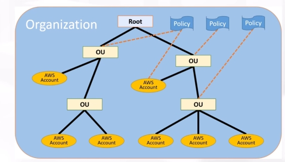

AWS Organizations¶
概要¶
複数のアカウントを階層構造で管理することができるサービス
組織単位（OU、Organization Unit）を作成し、AWSアカウントを紐づけて管理できる →組織単位でポリシーを一括管理したい場合などに利点がある 
主な機能¶
Organization API：アカウント作成を自動化することができる
aws organizations create-account --email <メールアドレス> --account-name "<アカウント名>" --role-name <ロール名>
SCP：service control policyの略
OUに所属するアカウントに対してアクセス権限を制御
上位組織でDenyされているActionは、下位でもDenyされる
上位組織でAllowされているActionは、下位でAllowするかフィルタリングできる
一括請求管理：組織単位での一括請求が可能
他サービスとの連携¶
AWS CloudTrail：OU内のアカウントの証跡を取得することができる